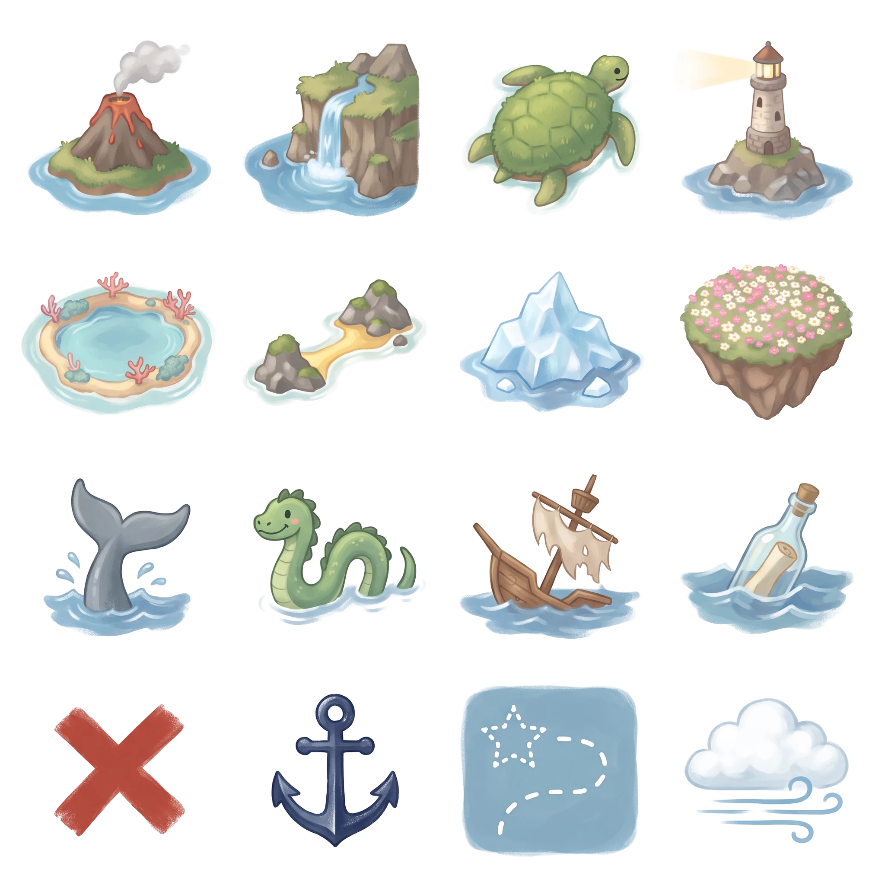

해도 그림 비교
같은 항해 기록을 앱의 실제 해도 그리기 코드로 두 번 그렸어요. 왼쪽은 지금 앱, 오른쪽은 새로 뽑아 둔 양피지·아이콘이에요.
처음 몇 번 항해
섬·바다 다 찾음
A · 지금
코드로 그린 종이 + 지금 아이콘 격자. 아래 네 섬·바다 표시는 그림 칸이 없어 코드 그림.
B · 새 재료
양피지 그림(나침반 포함) + 새 아이콘: 쌍둥이·등대·거북 등·빙산 섬, 산호초·해류·고래 길 표시.
새 아이콘 격자 전체 보기 (4×4)
